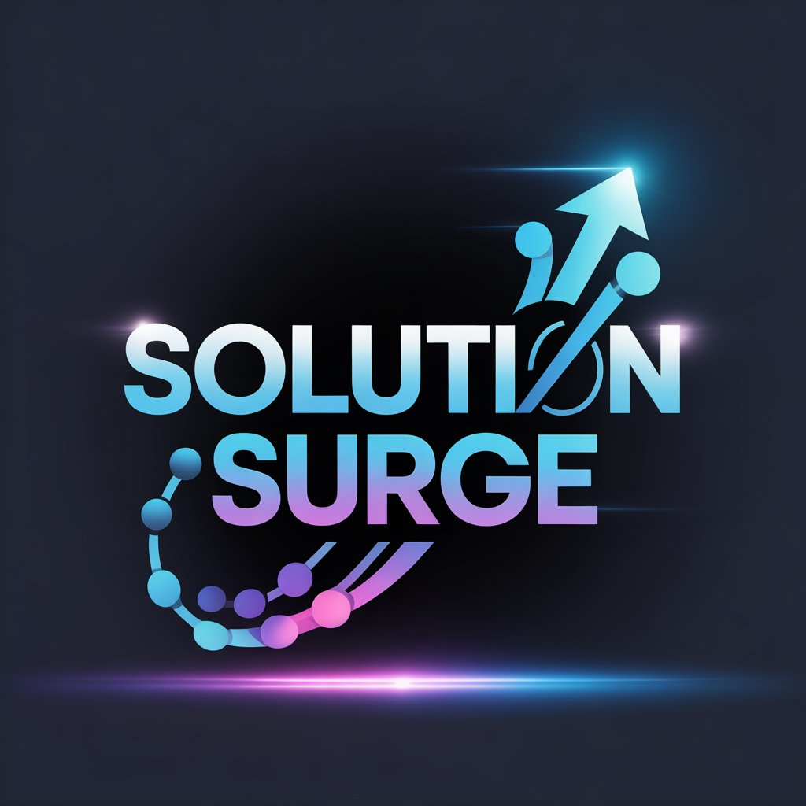
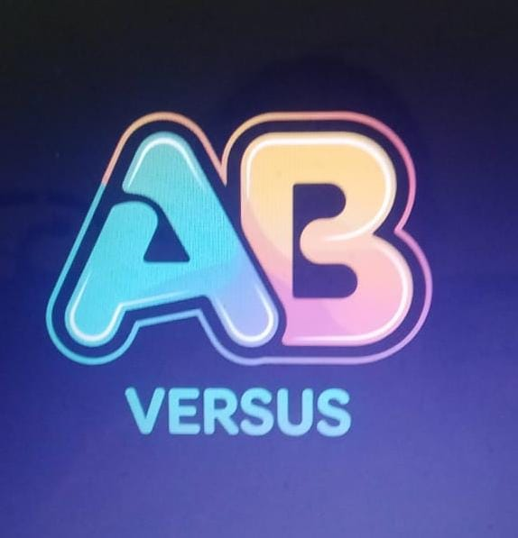
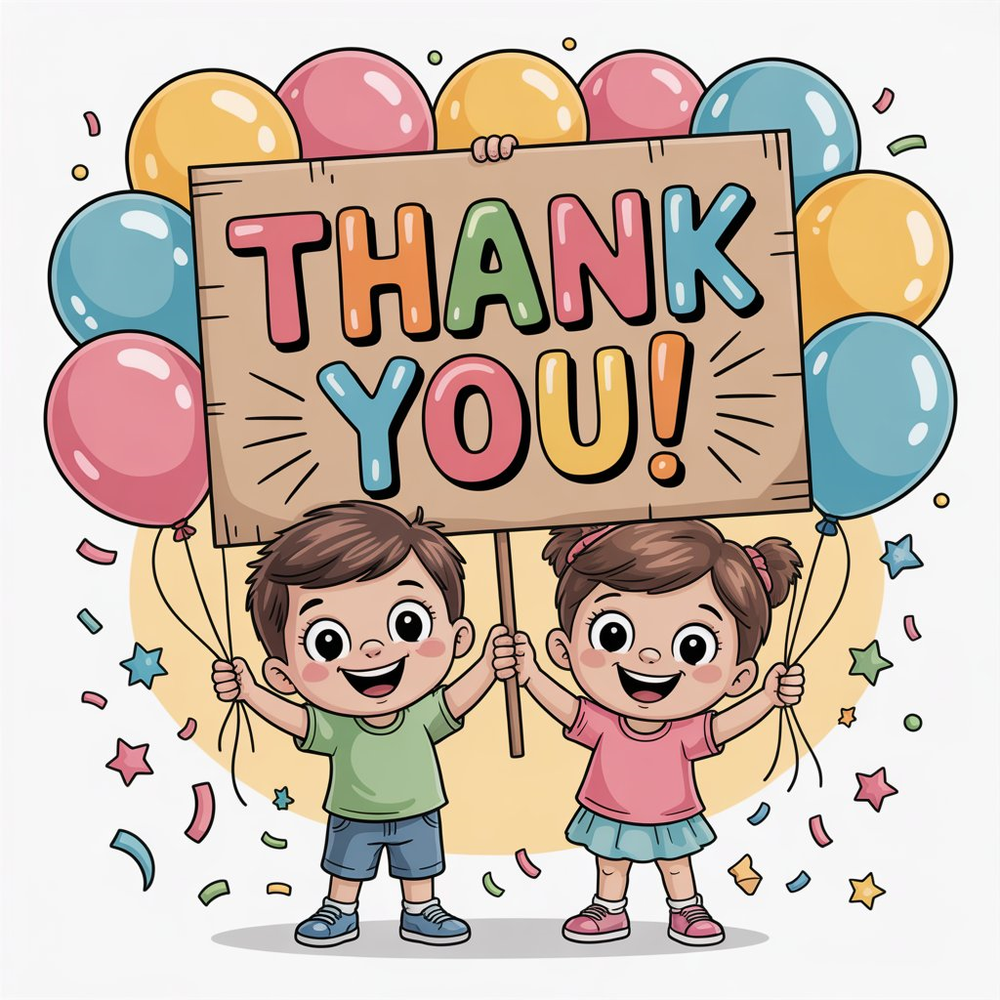

SOLUTION SURGE

About the Team
Solution Surge is a collaborative team of innovators and developers dedicated to creating impactful digital solutions.
By blending technology with creativity, the team’s core strength lies in building apps that solve real-world challenges while making learning fun and engaging.
Team Purpose
The purpose of Solution Surge is to design a gamified educational environment that helps schools and colleges improve learning experiences. The app focuses on:
- Making education interactive and fun.
- Encouraging student participation and engagement.
- Promoting teamwork, competition, and motivation.
- Providing teachers with tools to track progress in a playful way.
Why Gamified Education?
Traditional education often feels rigid and less engaging for students. Gamification introduces elements like:
- Points, Levels & Rewards : Encourage consistent participation.
- Leaderboards : Motivate healthy competition.
- Interactive Challenges & Quests : Transform lessons into adventures.
- Collaborative Tasks : Teach teamwork and problem-solving.
Arcane Battle

Meaning of Arcane Battle
Arcane → It signifies the unknown or mysterious nature. It carries a sense of hidden wisdom, sorcery, and mystical powers.
Battle → means a fight, duel, or contest of strength and strategy.
Together, Arcane Battle means:
A mysterious and magical duel, where hidden knowledge and powerful forces clash to determine victory.
Gameplay
The game board is a 3x3 grid.
Two players take turns placing their symbols:
- Player 1 uses A (Arcane)
- Player 2 uses B (Battle)
The goal is to align three of your symbols horizontally, vertically, or diagonally.
If all spaces are filled without a winner, the round ends in a draw.
Key Features
- Arcane vs Blade Theme : A mystical twist on the traditional XO game.
- Quick Matches : Perfect for short bursts of fun or serious duels.
- Simple but Strategic : Easy to learn, hard to master.
- Mode : Play with friends on the same device.
- Immersive Design : Clean visuals with a magical, battle-like feel.
Why Play Arcane Battle?
- Brings a fresh fantasy theme to a timeless classic.
- Enhances focus, planning, and strategy skills.
- Provides instant fun for all ages.
- Great for friendly challenges and quick brain exercise.
Summary
Arcane Battle is not just another tic-tac-toe game—it is a duel of magic and might, where A (Arcane) clashes with B (Blade) in every move. Whether you’re a casual player or a strategist, this game delivers endless fun and challenge.
QR CODE for our Arcane Battle App
Advantages of Gamified Education & Arcane Battle
- Increased Engagement : Students find learning more exciting when it feels like a game.
- Motivation Through Rewards : Points, badges, and leaderboards encourage active participation.
- Improved Knowledge Retention : Interactive challenges make lessons memorable.
- Healthy Competition : Students push themselves to achieve more in a positive way.
- Collaboration & Teamwork : Multiplayer tasks help build social and problem-solving skills.
- Instant Feedback : Students see results immediately, helping them learn from mistakes.
- Adaptability : Gamified tools can be tailored for schools, colleges, and various subjects.
- Quick Fun : Short matches make it perfect for casual play anywhere, anytime.
- Engages All Ages : Universally familiar rules with a fantasy theme.
- Offline Friendly : Can be played on the same device without internet.
At Solution Surge, we believe in:
- Innovation : Bringing fresh ideas into education and technology.
- Impact : Building apps that solve real-world challenges.
- Teamwork : Working together to achieve common goals.
- Future-readiness : Preparing learners for tomorrow through modern learning experiences.
Our Vision:
To revolutionize education by making learning exciting, gamified, and meaningful.
Our Mission:
To create apps that merge fun and knowledge, helping students and educators thrive in a digital-first world.
Mystery and might in every battle, Arcane leads the way as tactics tattle..!
